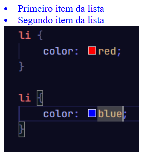
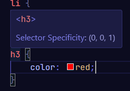
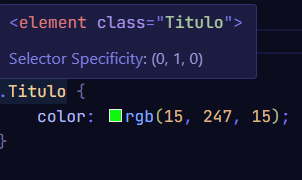
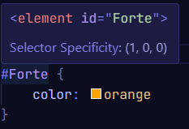
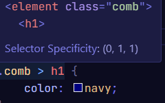
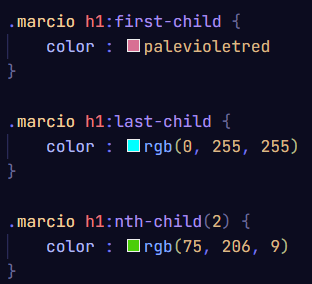

Conteudo novo
CascataEspecificidade
Combinadores
Regra da mae e filha
Estilizando o anterior
pseudo-classes
Display-block
Display-inline
Box model
Sufixos fisicos
box-sizing: border-box
Cascata
Quando existe mais do que um estilo num documento HTML, estes funcionam em cascata numa folha de estilo virtual A última regra da cascata é a que tem prioridade.
Exemplo:
Perceba que há duas listas não ordenadas no css, cada uma com uma cor diferente, porém a prioridade de cor é da ultima!
Especificidade
A especificação é a maneira de como os navegadores definem quais valores de propriedades são os mais relevantes para o elemento a ser utilizado. A especificação é baseada apenas nas regras impostas na composição de diferentes tipos de seletores, sendo eles seletor pela Tag, Id e Class
A seleção pela TAG é a mais simples e com menor peso
exemplo:
Este H3 é pela Tag
Perceba que o h3 pela Tag só possui 1 de peso o que o torna o mais "fraco" dentre os 3
A seleção pela CLASS é mais forte tendo 10 de peso
exemplo:
Este H3 é pelo Class
Perceba que o h3 pelo Class possui 10 de peso o que o torna o mais forte do que a Tag
A seleção pela ID é a mais forte tendo 100 de peso
exemplo:
Este H3 é pelo Id
Perceba que o h3 pelo ID possui 100 de peso o que o torna o mais forte dentre os 3
Combinadores
Como o nome sugere são combinaçoes entre seletores
exemplo com h1
Este é um exemplo de combinador
Este é outro h1
Filho da div
No caso o combiandor é comb + h1
Perceba que o seletor de Especificidade agora é 11 isso porque junta-se a tag com o class. O outro h1 se estiver dentro da div ele tambem vai ficar verde se estiver fora a sua cor ou qualquer outra estilização é anulada.
Regra da mae e filha
Se o "h1" estiver com um indicativo de maior (>) ele esta dizendo que ele é filho da div
exemplo:
COMB > H1
Perceba que o "Filho da div" recebeu uma cor, já o "Este e outro h1" NÃO recebeu a cor porque é neto e não filho da div que esta com o class.
Estilizando o anterior
H1 + H1
Qunado usar essa tag voce esta dizendo que quer estilizar o h1 que tem um outro h1 antes dele
exemplo:
Primiero
Segundo
Terceiro
Perceba que apenas o primeiro nao foi estilizado! isso porque não tem outro h1 antes dele.
Isso vale para qualquer tag nao apenas h1
pseudo-classes
pseudo-classes são "falsos elmentos" onde basicamnete voce consegue criar um combinador sem criar uma class para uma tag especifica quase como se fosse um atalho
Exemplo:
Primeiro filho
Segundo filho
terceiro filho
Display-block
Há varios elementos que tem diplay block como nav, header, div etc...
SUA PRINCIPAL CARACTERISTICA É QUE ELE OCUPA TODA A PAGINA Quando o limite da tela é quebrado ele pula pra linha de baixo.
- widht
- height
- padding
- margin
- border
funcionam por padrão com display-block
Display-inline
Todos os elemntos que tem Display-inline usam apenas o espaço que presicam sem usar a tela toda, essa é a pricipal diferença entre os 2
Muitos elementos usam o display inline principalmente ancoras de links por isso é necessario usar "br" para separa-los individualmente.
- padding
- margin
- border
widht e height não funcionam no display inline
Além disso padding, margin e border so funcionam na horizontal
Box model
Margin, padding e border servem para controlar o espaçamento e o contorno dos elementos em um layout de página web
- Margin é o espaçamento entre os elementos
- padding é o espaçamento interno dos elementos
- border é o contorno dos elementos
No contexto de HTML, "shorthand" é uma técnica utilizada no CSS para escrever o código de forma mais rapida
Veja abaixo todos os exemplos de shorthand do margin.shorthands do Margin
Quando queremos colocar a mesma quantidade de valores de todos os lados do margin usa-se apenas um valor:
- 1 valor = Aplica o mesmo valor para todos os lados: top, right, bottom, left.
Exemplo:
margin: 20px;Todos os valores serão 20px
Quando queremos colocar a mesma quantidade de valores em apenas dois lados do margin usa-se 2 valores:
- valor1 = top e bottom
- valor2 = right e left
Exemplo:
margin: 20px; 30px;A parte de cima e de baixo será 20 e a direita e a esquerda será 30
Quando queremos colocar valores diferentes nos lados do margin usa-se 3 valores:
- valor1 = top
- valor2 = right e left
- valor3 = bottom
Exemplo:
margin: 20px; 30px; 40px;O de cima recebe 20, o de baixo recebe 40 e os lados 30
Quando quiser colocar quantidade de valores diferentes de todos os lados do margin usa-se 4 valores distintos para cada lado:
- valor1 = top
- valor2 = right
- valor3 = bottom
- valor4 = left
Exemplo:
margin: 20px; 30px; 40px; 50px;Todos os lados são diferentes e recebem 20, 30, 40 e 50 respectivamente
OS VALORES ACIMA VALEM PARA PADDING E BORDER TAMBÉM!!!!!!!!
exemplo:

Sufixos fisicos
- top Parte superior
- right Parte direita
- bottom Parte inferior
- left Parte esquerda
Estes sufixos são os mais comuns.
Exemplo:
margin: 20px; 30px; 40px; 50px;Sufixos logicos
Esses se adaptam à direção do texto (LTR ou RTL) e são ideais para projetos multilíngues.
- block Afeta os lados verticais.
- inline Afeta os lados horizontais.
- block-start mexe no início do eixo vertical.
- block-end mexe no fim do eixo vertical.
- inline-start mexe no início do eixo horizontal.
- inline-end mexe no fim do eixo horizontal.
box-sizing: border-box
É uma regra do CSS que controla como o navegador calcula o tamanho dos elementos.
Sem o border-box o navegador vai somar todos os valores que voce colocar no widht, padding e no border por exemplo.
exemplo sem box-sizing:
- widht = 100px
- padding = 20px
- border: 5px solid red;
- background-color: lightcoral;
- box-sizing: content-box;
- margin-bottom: 20px;
A primeira caixa fica maior que 200px, porque o padding e a border são somados.
exemplo com box-sizing:
- width: 200px;
- padding: 20px;
- border: 5px solid green;
- background-color: lightgreen;
- box-sizing: border-box;
A segunda caixa fica com exatamente 200px.